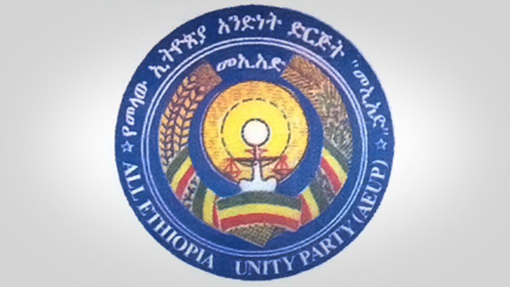
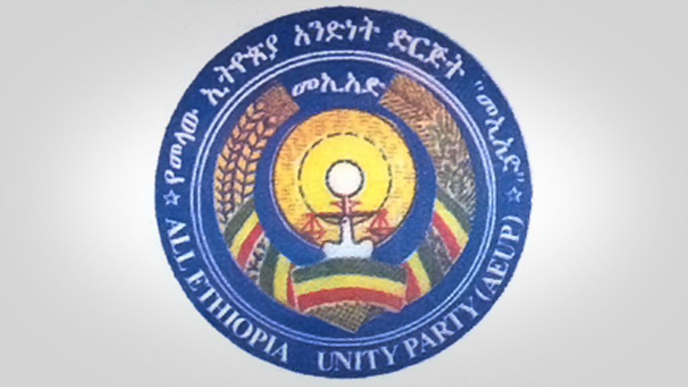

ጥቃት አድራሾቹ የታጠቁት መሳርያ እና ድጋሚ በአማርኛ ተናጋሪዎች ላይ ጭፍጨፋ !

ከሟቾች መካከል ሴቶች እና ህፃናት ይገኙበታል
by Dawit Atreso
ዛሬም በቄለም ወለጋ ለምለም ቀበሌ በተፈፀመ ጥቃት በርካታ ሰዎች ተጨፍጭፈዋል። እሱና ቤተሰቦቹ በአካባቢው ነዋሪ የሆኑ አንድ ነዋሪ እንደገለፀው ዛሬ የተፈፀመው ጭፍጨፋ እጅግ በጣም አሳዛኝ እንደነበር ገልፆ በርካታ ሰው ተገድላል፤ ሴቶች እና ህፃናትም ይገኙበታል ብሏል። በአካባቢው ኔትዎርክ ይሰራ ነበር አሁን ላይ እየሰራ አይደለም ቤተሰቦቼ ቦታው ላይ ነበሩ አምልጠው ማቻራ የምትባል አካባቢ ገብተዋል ፤ ሲል ገልጿል። ጥቃቱን እስካሁን የኢትዮጵያው ጠቅላይ ሚኒስትር አረጋግጠዋል ፤ " ጨፍጫፊዎቹ የሸኔ ቡድን " ናቸው ብለዋል።
ከጥቂት ቀናት በፊት በምዕራብ ወለጋ ቶሌ ቀበሌ መንግስት በይፋ ባመነው ብቻ ከ300 በላይ ሰዎች መጨፍጨፋቸው ይታወሳል። በወቅቱ ተገድለው የተቀበሩ በአንድ አካባቢ ብቻ እስከ 1500 እንደሚደርስ ቤተስቦቻቸው እዛው ያሉ ነዋሪዎች መናገራቸው አይዘነጋም። አንዳድን ተቋማት ቁጥሩን ከዚህም ከፍ ያደርጉታል። አሁንም ንፁሃን ፣ ምንም ስለፖለቲካ የማያውቁ ህፃናት፣ ሴቶች እየተገደሉ ሲሆን ከቀናት በፊት የነበረው የንፁሃን ጭፍጨፋ ሰሞነኛ አጀንዳ ሆኖ አልፎ ነበር
መብራት እንኳን በቅጡ የሌለው አካባቢ ነው። ከቦቀሎ እና ማሽላ እንጀራ በዘለለ የማይበላ ፤ በኑሮው የተጎሳቆለ ማህበረሰብ ነው እንኳን ጥይት እና ገጀራ ሊገባው ! እጅግ ምስኪን ማህበረሰብ ነው ። ሰው ወዳድ ናቸው ፤ እንግዳም ተቀባይ ናቸው ፤ ያላቸውን አውጥተው የሚያስተናግዱ ናቸው። ፍርድ ከላይ ነው ፤ ፍርድ ከአላህ ነው ለዛ ማህበረሰብ ይሄ አይገባውም ነበር። በሚያሳዝን ሁኔታን የማህበረሰቡን ሮሮ፣ ጩኸት ማን እንደሚሰማው አናውቅም። ጥቃት አድራሾቹን ማን ሃይ እንደሚላቸውም አናቅም። ለማን አቤት እንደምንል ግራ የሚገባ ነው። ለሁለተኛ ጊዜ መሆኑ ነው ባለፈው ከፍ ብሎ ጊምቢ አካባቢ በጣም ብዙ ሰው በተሰመሳሳይ ሁኔታ ተጨፍጭፏል።
ጋዜጠኛው በድጋሚ መታፈኑ!

by Dawit Atreso
ከቀናት በፊት ሲቪል በለበሱ ሰዎች ከቤቱ የተወሰደው ጋዜጠኛ ያየሰው ሽመልስ እስካሁን ያለበትን ማወቅ እንዳልቻሉ ቤተሰቦቹ ገለፁ። ቤተሰቦቹ ዛሬ በላኩልን መልዕክት ሰኔ 21 ቀን 2014 ዓ/ም 7 ሲቪል የለበሱ ሰዎች ከቤቱ ከወሰዱት በኃላ እስካሁን ድረስ ያለበትን ለማወቅ እንዳልቻሉ አስረድተዋል። " ፌዴራል ፖሊስ እና አዲስ አበባ ፖሊስ ብንፈልገውም ልናገኘው አልቻልም ፤ ለኢትዮጵያ ሰብዓዊ መብቶች ኮሚሽን ብናመለክትም ከፌዴራል ፖሊስ እና አዲስ አበባ ፖሊስ ውጭ እንደሆኑ ነው የነገረን " ሲል አሳውቆናል ሲሉ ገልፀዋል። ቤተሰቦች በያየሰው ሽመልስ ቦታ አለመታወቅ ከፍተኛ ጭንቀት ላይ መሆናቸውን ገልፀው የወሰዳቸው አካል ያለበትን ብቻ እንዲያሳውቃቸው ተማፅነዋል።
ጋዜጠኛ ያየሰው ከጥቂት ቀናት በፊት ነበር በ10 ሺ ብር ዋስ ፍርድ ቤት ከእስር እንዲለቀቅ ወስኖለት የተለቀቀው። ከዚህ በኃላ ነው በድጋሚ የተያዘው። በተመሳሳይ ጋዜጠኛ ያየሰው ሽመልስ በተወሰደ ከአንድ ቀን በኃላ ጋዜጠኛ አበበ ባዩ ምሽት 4:30 ሲቪል በለበሱ ሰዎች የተወሰደ ሲሆን ቤተሰቦቹ እሱንም እካሁን ማግኘት እንዳልቻሉ አመልክተዋል። ፌዴራል ፖሊስ እና አ/አ ፖሊስ መጠየቃቸውን ነገር ግን እንዳላገኙት ፤ ያለበትን ለማወቅም ለኢሰመኮ ቢያመለክቱም ያለበትን ለማግኘት እንዳልተቻለ ገልፀዋል። የአበበ ባዩ ቤተሰቦችም ጭንቀት ላይ መሆናቸውን ገልፀው የወሰዳቸው አካል ያለበትን ቦታ እንዲያሳውቃቸው ተማፅነዋል። ጋዜጠኛ አበበ ባዩ ከጥቂት ወራት በፊት ለእስር ተዳርጎ መፈታቱ የሚታወስ ነው።
የሱዳን መንግስትና የአፋኙ የኢትዮጵያ መንግስት ጦርነት እየጎሰሙ ነው!!

by Dawit Atreso
በዛሬው እለት ሱዳን ኢትዮጵያን በግልፅ መውረር ጀምራለች፤ ባትጀምር ይግርመኝ ነበር። አይ ኢትዮጵያ! የአራት ኪሎው ተረኛው መንግስት አሁን ላይ በተለይም የኢትዮጵያን ህዝብ ለማደንዘዝ እና አጀንዳ ለማስቀየር የተለያዩ አጀንዳዎች ላይ ሌት ተቀን በመስራት ላይ ይገኛል። ይንንም ተከትሎ በወልጋ ሆን ብሎ ያስጨፈጨፋቸውን ከሁለት ሺህ በላይ ንፁሃን አማርኛ ተናጋሪ ከህጻን እስከ አዋቂ ነፍሶችን፤ አሁን ደግሞ በሱዳን እና በደቡብ ሱዳን ተወረናል ድረሱልን እያለ ይገኛል። ግልጹን እንነጋገር ከተባለ የዘሪፖርተር ጋዜጣ በአዲሱ በደቡብ ምዕራብ ክልል የደቡብ ሱዳን ታጣቂዎች ከመቶ ሃምሳ በላይ ኪሎ ሜትር በላይ መሬት መውረራችውን ገልጾ ሲያበቃ በሰአታት ውስጥ ከዌብሳይቱ ላይ ዘገባውን እንዲያወርድ ተደርጓል። አይ አፋኙ !!
የሱዳን መንግስትና የአፋኙ የእትዮጵያ መንግስት ጦርነት እየጎሰሙ የሚገኙበት ሁኔታ ነው ያለው። በዚህም የሱዳኑ መሪ አልቡርሃን የሃገሩን ህዝብ አጀንዳ ለማስቀየር እና ካለበት ተቃውሞ ራሱን ለማዳን በማለት የጦርነት ጉሰማ ላይ ይገኛል። በአንፃሩ ለኢትዮጵያው መንግስት የተመችው ሁኔታ ተፈጥሮለታል። የንፁሃን ደም በከንቱ እየፈሰሰ እና ሰብአዊ መብት እና በአንድ ሃገር ላይ አንደኛ ዜጋ እና ሁለተኛ ዜጋ ሆኖ በተከፋፈለበት ሁኔታ አሁን ድጋሚ ወደ ጦርነት ለመግባት የሚደረግ ጉሰማ ተገቢ ኣይደለም።
በምዕራብ ጎንደር ዞን የምዕራብ አርማጨሆ ወረዳ አስተዳዳሪ የሆኑት አቶ ደሳለኝ አያና ለቢቢሲ አማርኛ አገልግሎት የሰጡት ቃል ፦
- የሱዳን ሠራዊት በኢትዮጵያ በኩል ያሉ የድንበር አካባቢዎችን በከባድ መሳሪያ ደብድቧል። ድብደባው ለቀናት የዘለቀ ነው። እስከ ትላንት ማክሰኞ ከሰዓት ድረስ ሲደበድቡ ነበር።
- ነዋሪዎች ግጭቱ ሊባባስ ይችላል የሚል ስጋት አላቸው። አንዳንዶችም በአቅራቢያ ወዳሉ አካባቢዎች የመሄድ ሃሳብ አላቸው።
- ባለፉት ሶስት ቀናት በተፈጸመው የከባድ መሳሪያ ጥቃት #በሰው_ላይ_ጉዳት_አልደረሰም። የከባድ መሳሪያዎቹ በእርሻ ቦታዎችና የግብርና ካምፖች ላይ ጉዳት አድርሰዋል።
- በሱዳን የከባድ መሳሪያ ጥቃት ምክንያት ነዋሪዎች ባለፉት ቀናት በእርሻ ማሳቸው ላይ የተለመደውን የዕለት ከዕለት ሥራቸውን ከማከናወን ተቆጥበዋል።
- የንግድና የሥራ እንቅስቃሴ ተስተጓግሏል። ሱዳንና ኢትዮጵያ የሚገናኙበት የድንበር ከተማ የሆነችው የገለባት መተላለፊያ #ተዘግቷል።
ከ1500 በላይ አማርኛ ተናጋሪዎች በኦሮሚያ ተጨፈጨፉ

by Dawit Atreso
"ፈጣሪዬን ጠየኩት ለምን እኔን አተረፍከኝ ብዬ" ይህን ልብ የሚነካ ንግግር የተናገሩት 32 ቤተሰባቸውን በዘረኛው እና በ ብልፅግና ፓርቲ በቀጥታ በሚደገፈው በኦነግ ታጣቂ ጭፍጨፋ ያጡት ሰው ናቸው። በተለይም ይህ አማራን እና አማርኛ ተናጋሪ ጠልነት በይፋ ከ4 ዓመታት በፊት በግልፅ በጥላቻ እና በሀገሪቱ በይፋ ለተንሰራፋው ሁሉን አቀፍ ተረኝነት መታያ ሆኗል። በተለይም ዘረኛው አብይ አህመድ በቀጥታ ስርጭት በፓርላማው በይፋ የዘረኝነት ቅስቀሳ እና የጥላቻ ቅስቀሳ ንግግር በማድረግ ላይ ይገኛል።
ይህንንም ከሚያረጋግጡት ማስረጃዎች አንዱ ድግሞ ዘረኛው ጠቅላይ ሚንስትር በኦሮሚያ ክልል በምክትል ፕሬዝዳንትነት ሲራ የተናገረው አሁን ላይ አፍትልኮ በመውጣት ላይ ይገኛል። በዚያን ወቅት ከተናገረው ውስጥ የ ኦሮሞ ህዝብ መሬትን ለሌላው ብሄር መሸጥ እንደሌለበት እና የመሬትን ጉዳይ በተቻለ አቅም ችላ እንዳይሉት ሲያሳስብ ተደምጧል። ይህ ንግግር በስልጣን ላይ በወጣበት ወቅት ለኢትዮጵያ ህዝብ ቃል ከገባውና አንድነትን ከሰበከበት ጋር የተራራቀ ነው። በተለይም በዚህ ወቅት ኢትዮጵያ ለገባችበት ውጥንቅጥ በቀጥታ ተጠያቂ የሚሆነው አካል የኦሮሞው መንግስትና መሪው ናቸው።
ታድያ የጠቅላዩን ትእዛዝ በቀጥታ በመቀበል በ ወለጋ ጊምቢ በከፋ ሁኔታ ከ 1 ወር ህፃን እስከ 100 ዓመት አዛውንት በመንግስት ተቀጣሪ አነግ ታጣቂዎች በአሰቃቂ ሁኔታ ተጨፍጨፈዋል። በጭፍጨፋው ወቅት በስፍራው ከነበሩት እና ካመለጡት ሰው ያገኘነው መረጃ እንደሚያመለክተው በወቅቱ መከላከያ በወጣበት ቅስፈት ነው መተው ጭፍጨፋውን የጀመሩት ብለዋል። አክለውም ወዲያው የስልክ እና ኢንተርኔት አገልግሎት መቋረጡን ገልፀዋል።


 
